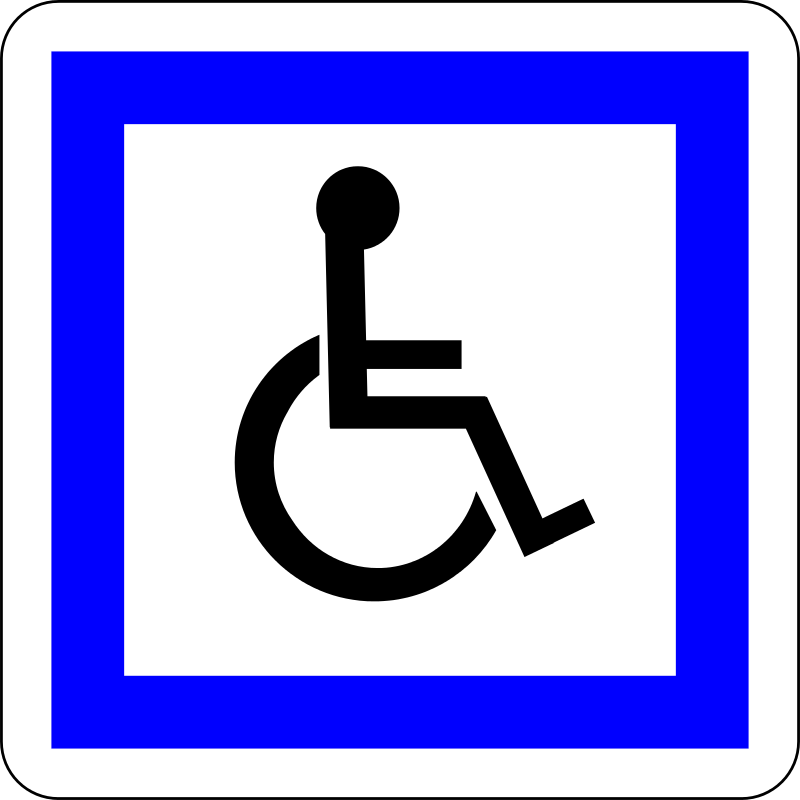
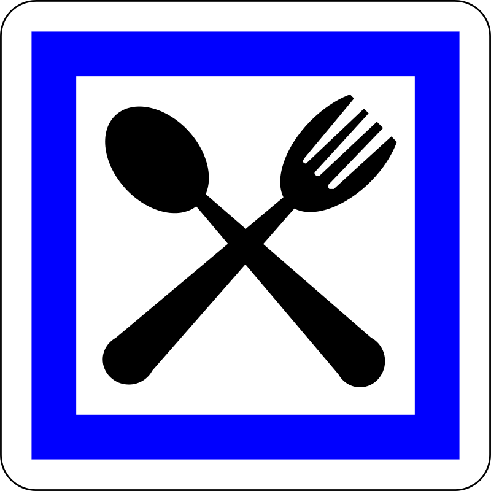

L'association de Prévention des Dangers et Sécurité de la Route.
Les Panneaux de Service
Les signaux routiers de services en France sont généralement carrés, à fond blanc et cadre bleu. Ils indiquent des services tels que téléphone, camping, embarcadère, etc.Ce panneau signale un emplacement de pique-niqueIISR 6. Cette signalisation est facultative ; seuls sont concernés les emplacements aménagés. La signalisation des postes d'appel d'urgence est obligatoire, mais elle peut être assurée par le poste lui-même. Ce panneau signale les postes d’appel d’urgence qui ne sont pas sur des emplacements d'arrêt d'urgence, ni visibles depuis la route. Dans les tunnels, deux panneaux doivent être implantés en signalisation de position, dans le sens de circulation et dans le sens inverse. Ce panneau est implanté en présignalisation si le poste d’appel d’urgence n’est pas suffisamment visible de la route. Le jalonnement piétonnier est obligatoire (avec les panneaux de jalonnement piétonnier Dp1a et Dp1b), sauf dans les tunnels où les postes sont rapprochés. La signalisation d’un poste de carburant est obligatoire sur les autoroutes et les routes à chaussées séparées sans accès riverain. Le poste doit être ouvert 7 jours sur 7 et 24 heures sur 24. Ce panneau signale des installations accessibles aux personnes handicapées à mobilité réduiteIISR 10. Cette signalisation est obligatoire sur les autoroutes et les routes à chaussées séparées sans accès riverain, et si tous les services sont accessibles aux personnes à mobilité réduite. Dans ce cas, il doit être implanté en présignalisation avec la signalisation des aires. Ce panneau ne doit jamais être utilisé seul. Hors autoroutes, cette signalisation est facultative, avec le panonceau M4n.  Pour les restaurants ouverts 7 jours sur 7 ce signal est facultatif . Il n'est prévu que hors agglomération, notamment sur routes à chaussées séparées sans accès riverain et autoroutes.